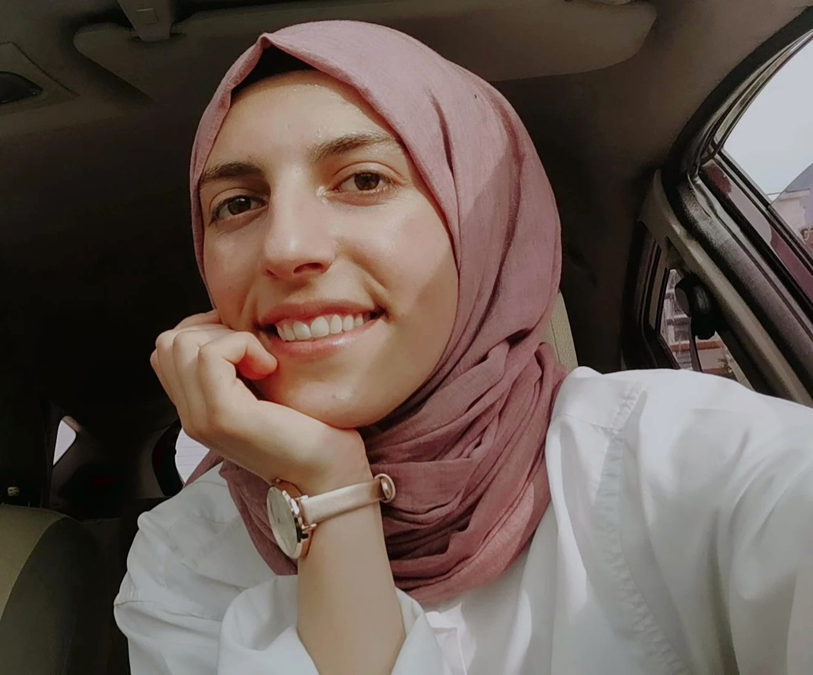

HOBİLERİM
Resim çizmek
Kitap okumak
Basketbol en sevdiğim ama onun yanında voleybol tarzı şeyleri de severim.
Bisiklete binmeyi çok severim, bana huzur veriyor.
Gezmeyi,yeni yerler görmeyi severim.
Müzik dinlemeyi severim.
Bu hayata yemek yemek için geldiğimi düşünüyorum.
HAKKIMDA
Ben İlknur Şevval Yılmaz, Erzincan doğumluyum. Elazığ'da yaşıyorum. Malatya'da okuyorum.
İnönü üniversitesi'nde Yazılım mühendisliği 2. sınıfım. Bu bölümü isteyerek tercih ettim
aslında istemediklerim arasında en mantıklı gelen bölümdü.Geldiğim için pişman değilim ve gelmişken
de ilk olarak kendim için de iyi bir noktaya ulaşmam gerektiğinin farkındayım.Bunun içinde
çok fazla çalışmam gerektiğini de biliyorum.
Bildiğim diller ingilizce az-orta seviye.
Bildiğim program dilleri; C ,java ,html,css,Python az-orta seviyelerde biliyorum. C# da öğreniyorum.
HEDEFLERİM
İleride siber güvenlik alanında gelişmeyi düşünüyorum aslında bir çok
alanda kendimi geliştirmek istiyorum.Bir çok alanda bilgim olsun ama şuan
için gelişmek istediğim alan siber güvenlik. Ya da insansız hava araçları gibi
yapay zeka tarzı alanlar da ilgimi çekebilir.